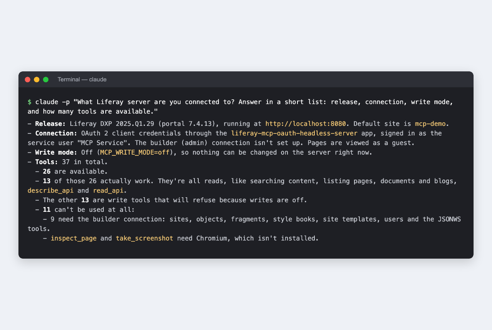
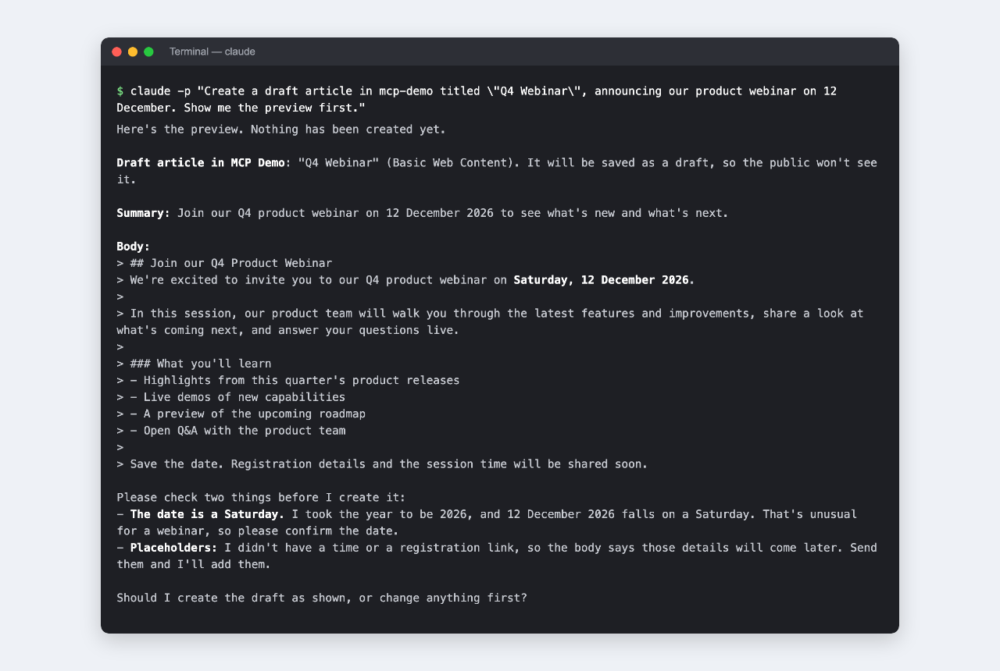
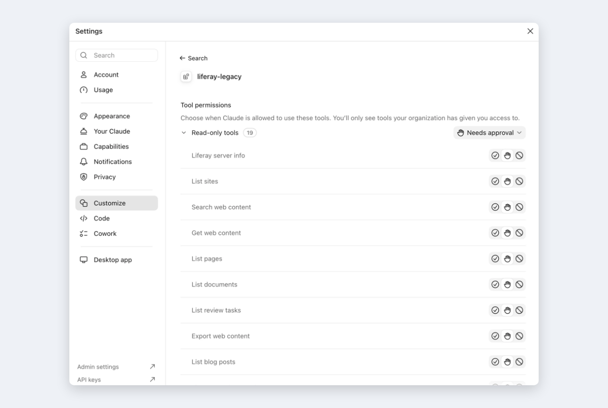
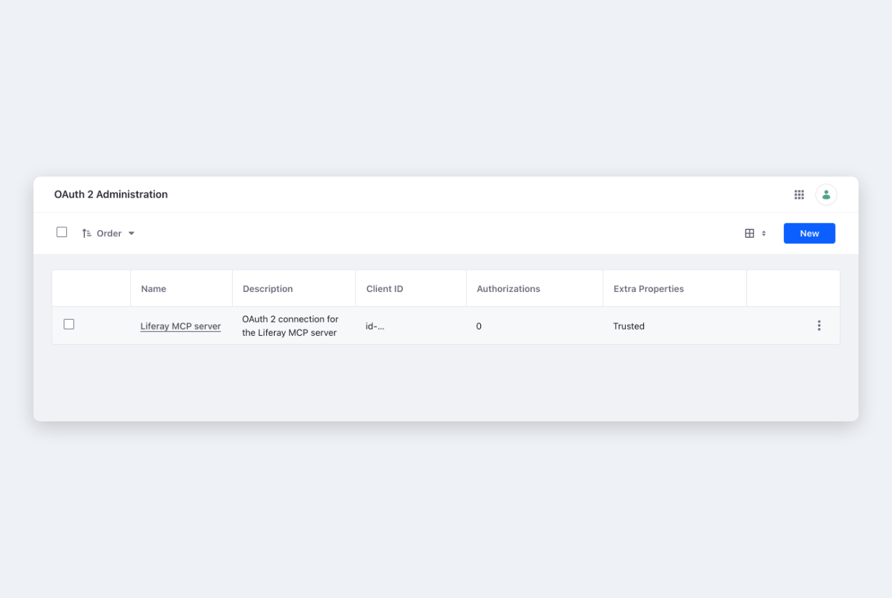

将 Claude Code、Claude 桌面应用等 AI 助手连接到本身不提供 MCP 的 Liferay DXP 版本。它们可以用自然语言查找、阅读和修改内容，遵循 Liferay 的权限，并在任何更改之前显示供你确认的预览。这是一个供试验使用的社区应用。
功能
- 适用于没有 MCP 的版本. 支持 Liferay DXP 7.4 U1 至 U92 以及 2024.Q1 至 2025.Q4，无需修改 Liferay。
- 内容工具. 搜索、阅读、创建和更新 Web 内容、文档、博客、类别和标签、导航菜单及翻译，并处理审核工作流。
- 所有 API. 通用工具可以访问 Liferay 的所有 Headless REST API 和 JSON Web 服务。
- 安全的写入. 写入默认关闭。开启后，每项更改都会先显示预览，确认后才会执行，所有操作都会记录在审计日志中。
- 最小权限. 以一个服务用户的身份，通过 OAuth 2 应用程序运行，其作用域限制了可访问的范围。两者都由 Liferay 强制执行。
- Claude Code 与桌面应用. 只需一条 claude mcp add 命令即可添加，也可以添加到 Claude 桌面应用的聊天和 Code 标签页中。
截图



